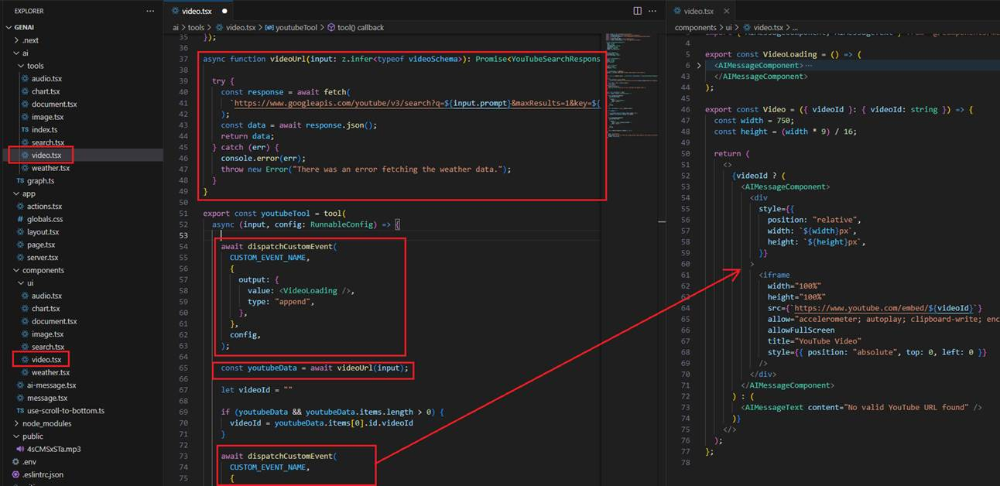

Multi-Modal Next.js Chat App with Vercel AI SDK & LangGraph.js
Video Link: https://youtu.be/6ZWi-TQI-l8
GitHub Repository: https://github.com/Ashot72/Multi-Modal-Chat
LangGraph.js is a library for building stateful, multi-actor applications with LLMs, used to create agent and multi-agent workflows. Compared to other
LLM frameworks, it offers these core benefits; cycles, controllability, and persistence.
Vercel AI SDK is a set of tools that enables developers to easily integrate AI capabilities, like natural language processing and machine learning, into their applications hosted
on the Vercel platform.
In this application, we created a multi-modal chat platform. A user can ask a question, upload an image and inquire about it, convert content into an audio file and download it,
request information, plot a chart based on the results, and download it. The app can also load videos, display documentation, and provide links pointing to websites.
Additionally, it can generate images based on prompts. In general, you can extend it and do more using various tools.
In the diagram, a user asks a question. If the question does not require tooling, such as the prompt 'Hi, how are you?', then a plain text response is used. However, if the prompt
is 'Generate a video of Mount Ararat,' then the image tool is called.
The interesting thing about the app is that we dispatch custom Langchain.js callback events and stream React components form the server to the client with Vercel AI SDK.!
In the video, you can see that in many cases, before getting the results from the server, we stream a React skeleton/loader component from the server to the client. Once the
result is received, we replace the skeleton/loader component with the final React component, such as a chart or audio, streamed from the server to the client.
Figure 1
We created a graph that uses different tools.
Figure 2
Let's investigate the tools. If you look inside the tools, you will see that they are mostly composed of three parts. In the first part, we stream a skeleton/loader React component from the
server to the client. You will also see that we dispatch the AudioLoading React component.
Figure 3
AudioLoading component is a React placeholder component.
Figure 4
This is the blinking skeleton AudioLoading component rendered on the page.
Figure 5
After streaming the AudioLoading component, we generate the actual MP3 audio file in the public folder based on the prompt, which in our case is a poem.
Figure 6
Once the audio file is generated, we stream the Audio React component. Note, that we also change the type from append to update, which we will discuss later.
Figure 7
The Audio control in this case is a built-in HTML Audio control that we display on the page.
Figure 8
This is the HTML Audio control that replaced the AudioLoading component.
Figure 9
For the Chart control, we do not have a loading control or any code that retrieves chart data. The reason is that the data comes from memory. First, you ask about
Lightning Tools' popular products, and then, after that, when you ask to plot a chart, the formatted data matching the Zod schema is passed to Chart.js to stream the control.
Figure 10
You can see that the schema defines the chart type, title, and a data array containing labels and values.
Figure 11
To plot a chart, we use the Chart.js library. The interface matches the Zod schema that we pass to the component to render the chart.
Figure 12
For the Document tool, we use a similar approach, but the actual data comes from the Langchain TaviaSearchAPIRetriever based on the prompt. It returns three results.
Figure 13
In the DocumentLoading component, we define a skeleton card control.
Figure 14
After the data is retrieved, we render three card components with links, as we return three results.

Figure 15
Image rendering uses the same approach. We use DalleAPIWrapper to generate the image and pass the URL to the img tag.
Figure 16
We display an image placeholder before generating the image.

Figure 17
This is the image after generation.

Figure 18
For the video, we use a similar approach. We find a YouTube video based on the prompt and render it on the page.
Figure 19
To search for a YouTube video, we use the YouTube Data API, which is free, but you need to register to get the key, which goes into the .env file.

Figure 20
Here, I search for I would like to watch a video on Trump's tariffs on Mexico and Canada, specifying the maximum result as one. We render the video on the page
by passing the videoId to https://www.youtube.com/embed/
Figure 21
To render the Weather control, we first obtain the data from the fake weather API and then render the control.
Figure 22
This is the fake weather API for some cities. You can use a real one in your app.
Figure 23
You can upload a picture and ask about it, but the picture must be in base64 format so the AI can process it. It will not work if it's an image URL. No tooling is called in this case.
In your application, you can add various tools that perform different tasks, making your chat even more multi-modal.
Figure 24
In the actions file, we specify createAI, which creates a client-server context provider that can be used to wrap parts of our application tree to easily manage both the UI and AI states of our application.
Figure 25
In our application, we print the state to the console.
Figure 26
When we write a prompt and may also upload a picture, we call sendMessage on the server, passing the prompt and the file in base64 format.
We define getMutableAIState, which gets a mutable copy of the AI state that we can use to update the state on the server.
Figure 27
We call the processFile function, where we convert the state to a Langchain AI state, and where HumanMessage and AIMessage are types of message objects
used to represent communication between a human and the AI model.

Figure 28
Next, we call streamRunnableUI, which takes agentExecutor() and processInputs as arguments. ProcessInputs refers to the messages/history in Langchain format that
we already know. agentExecutor() returns the compiled graph model, where we define nodes and edges.
Figure 29
When calling streamRunnableUI, we first define createStreamableUI. createStreamableUI creates a stream that sends the UI from the server to the client. On the client side,
it can be rendered as a normal React node.
Figure 30
We define callbacks, which are of the type createStreamableUI or createStreamableValue. While createStreamableUI creates a streamable React component,
as we discussed, createStreamableValue streams serializable JavaScript values from the server to the client, such as strings, numbers, objects, and arrays.
Figure 31
In Langchain, we can dispatch custom callback events and consume them via StreamEvents.
Figure 32
Here is a sample code.
Figure 33
Let's consider the case where the prompt is 'Convert the content to audio so I can listen.' In this case, LangGraph calls the Audio tooling, and first, we dispatch the AudioLoading
React component with the type 'append.' With StreamEvents, we handle it, and as the type is 'append,' we add it to the StreamableUI so the client can see the Audio React
skeleton component rendered on the page. Then, we generate the audio file, and once the file is generated, we dispatch another React component, which is Audio, with the
type 'update.' We handle it, and as it has the type 'update,' we replace the existing skeleton control with the actual Audio control, which is a built-in HTML audio control.
Figure 34
In the case of the prompt 'Hi, how are you?', no tooling is called, and we do not dispatch a React component. In the code, we check if it is not a valid React element, and we know
that it doesn't require any React component dispatching. In this case, we know that with on_chat_model_stream, we can get a chunk, and we create a streamable value,
always appending it to the AIMessage. We always append it because, if it's writing a poem, we need to append each incoming chunk instead of replacing the previous one, as we
did when dispatching. On the client side, we use the createStreamableValue hook, which can return the current value, error, and pending state.

Figure 35
From the createStreamableUI function, we return the UI and the last event. We add the last event to the history via getMutableAIState.

Figure 36
From the sendMessage function, we return the streamed UI and the uploaded file (if any), then create a React element and append it to the state using the useState hook.